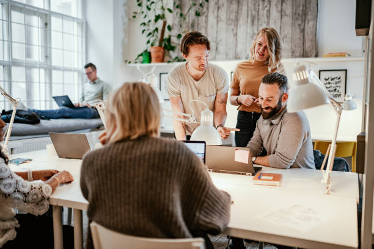
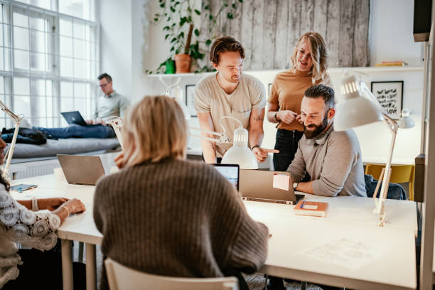

Conectando Ações, Transformando Vidas
Descubra a força que nos move e como a nossa rede está gerando um futuro mais justo e solidário para todos.
Nossa Causa em Movimento
Nossa Missão e História
Nossa missão é criar uma ponte sólida e acessível entre pessoas com o desejo de ajudar e projetos de alto impacto social... A Rede Gerando Futuro nasceu em 2024, a partir da inquietação de um grupo de amigos que perceberam a dificuldade de conectar projetos sérios a pessoas dispostas a contribuir.
A Voz de Quem Importa
Nossos Momentos
 
